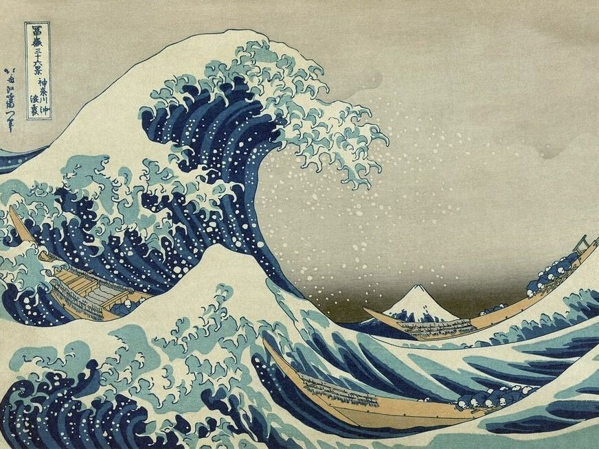
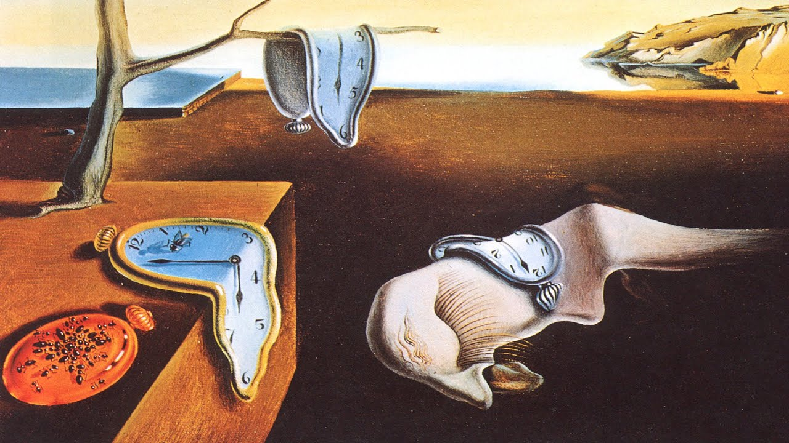

Grupo Cero es una cooperativa de artistas plásticos dedicados a la promoción del arte y la cultura. Nuestros miembros se enfocan en diversas expresiones artísticas, incluyendo la pintura, escultura, orfebrería, tejido y otras formas de arte. A través del trabajo cooperativo, hemos logrado crear un espacio de trabajo que nos permite tener un taller y una sala de exhibición para mostrar nuestras obras de arte. También compartimos un pequeño café que nos sirve como lugar de reunión y atención al cliente.
Desde nuestros inicios, nos hemos enfocado en fomentar la creatividad y la innovación entre nuestros miembros. Nos esforzamos por crear un ambiente de trabajo colaborativo donde podamos compartir ideas y técnicas para crear obras de arte únicas y originales. La calidad de nuestras obras de arte y la satisfacción de nuestros clientes son nuestras principales preocupaciones, lo que nos ha llevado a construir una buena reputación en el mercado artístico. Ahora, con la creciente demanda de nuestras obras, hemos decidido expandir nuestra presencia en el mercado a través de la creación de una página web y una posible tienda en línea.